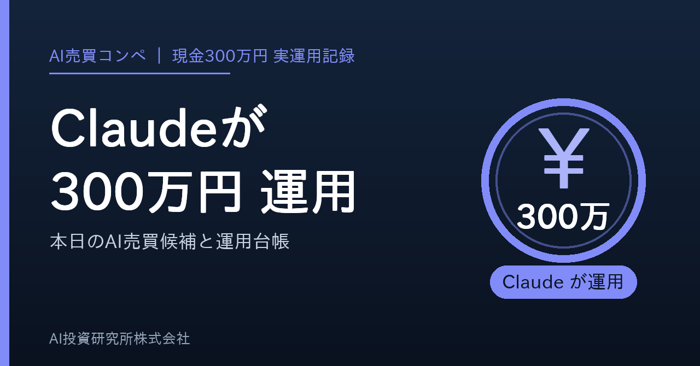
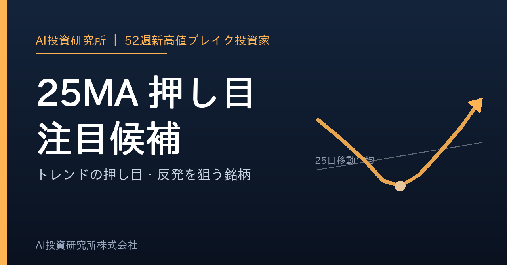
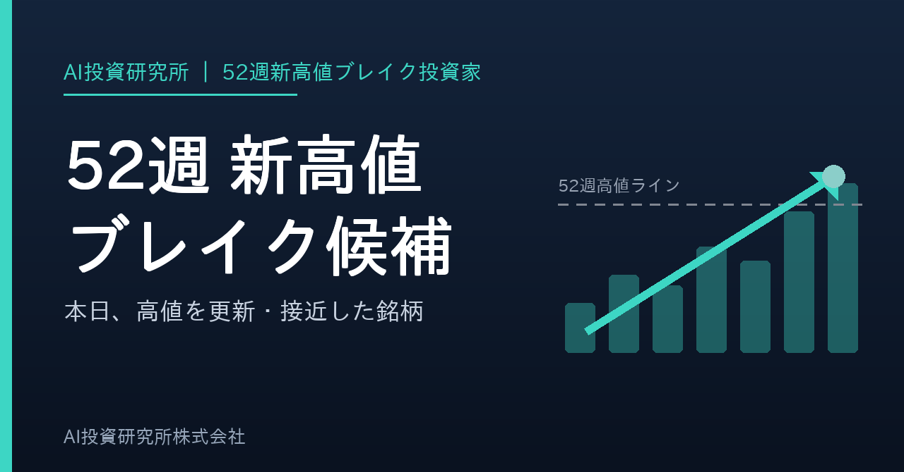

作成: 2026-08-28 03:29 JST ／ ボタンを押すとクリップボードに入ります。noteの新規記事に貼り付けてください。タイトル・本文・タグ・見出し画像を、それぞれ1タップでコピーできます。（ボタンが効かないときは枠の中を長押しして全選択してください）
note下書き: https://editor.note.com/notes/n9bbd9a1d8219/edit/

ボタンが効かないときは、この画像を長押しして「写真に追加」または「コピー」を選んでください。
1. 🔵 Aランク 9119 飯野海運
📊 スコア 158 💴 1,705円
📝 52週高値15%以内 / MA25上 / MA75上 / MA200上 / MA25上向き / MA75上向き / 売買代金3億円以上 / 100株購入額が資金10%以内 / DUKE旧52週高値サポート+80 / Sゲート未達(52週高値3%超・出来高が20日平均以下)で最大A
2. 🔵 Aランク 3895 ハビックス
📊 スコア 158 💴 484円
📝 52週高値15%以内 / MA25上 / MA75上 / MA200上 / MA25上向き / MA75上向き / 52週高値更新14日以内 / 売買代金1億円以上 / 100株購入額が資金10%以内 / DUKE旧52週高値サポート+80 / Sゲート未達(52週高値3%超・出来高が20日平均以下)で最大A
3. 🔵 Aランク 4588 オンコリスバイオファーマ
📊 スコア 108 💴 4,050円
📝 52週高値3%以内 / MA25上 / MA75上 / MA200上 / MA25上向き / MA75上向き / 52週高値更新3日以内 / 売買代金10億円以上 / 出来高増加 / 100株購入額が資金20%以内 / Sゲート未達(出来高が20日平均以下)で最大A
4. 🔵 Aランク 2801 キッコーマン
📊 スコア 108 💴 1,804円
📝 52週高値3%以内 / MA25上 / MA75上 / MA200上 / MA25上向き / MA75上向き / 52週高値更新3日以内 / 売買代金10億円以上 / 100株購入額が資金10%以内 / Sゲート未達(出来高が20日平均以下)で最大A
5. 🔵 Aランク 4443 Ｓａｎｓａｎ
📊 スコア 108 💴 2,191円
📝 52週高値3%以内 / MA25上 / MA75上 / MA200上 / MA25上向き / MA75上向き / 52週高値更新3日以内 / 売買代金10億円以上 / 100株購入額が資金10%以内 / Sゲート未達(出来高が20日平均以下)で最大A
6. 🔵 Aランク 7513 コジマ
📊 スコア 108 💴 1,459円
📝 52週高値3%以内 / MA25上 / MA75上 / MA200上 / MA25上向き / MA75上向き / 52週高値更新3日以内 / 売買代金3億円以上 / 出来高増加 / 100株購入額が資金10%以内 / 決算未確認で最大A
7. 🔵 Aランク 7956 ピジョン
📊 スコア 104 💴 2,124円
📝 52週高値3%以内 / MA25上 / MA75上 / MA200上 / MA25上向き / MA75上向き / 52週高値更新7日以内 / 売買代金10億円以上 / 100株購入額が資金10%以内 / Sゲート未達(出来高が20日平均以下)で最大A
8. 🔵 Aランク 4674 クレスコ
📊 スコア 103 💴 2,021円
📝 52週高値3%以内 / MA25上 / MA75上 / MA200上 / MA25上向き / MA75上向き / 52週高値更新3日以内 / 売買代金3億円以上 / 100株購入額が資金10%以内 / Sゲート未達(出来高が20日平均以下)で最大A
9. 🔵 Aランク 9107 川崎汽船
📊 スコア 103 💴 3,267円
📝 52週高値7%以内 / MA25上 / MA75上 / MA200上 / MA25上向き / MA75上向き / 52週高値更新3日以内 / 売買代金10億円以上 / 出来高増加 / 100株購入額が資金20%以内 / Sゲート未達(52週高値3%超・出来高が20日平均以下)で最大A
10. 🔵 Aランク 8818 京阪神ビルディング
📊 スコア 101 💴 1,135円
📝 52週高値3%以内 / MA25上 / MA75上 / MA200上 / MA25上向き / MA75上向き / 売買代金3億円以上 / CWH候補 / 100株購入額が資金10%以内 / Sゲート未達(出来高が20日平均以下)で最大A
9119 飯野海運 ⚡出来高0.93倍
📝 紹介: 飯野海運は海運業に属する銘柄で、スクリーニング評価はAランク。52週高値まであと1.1%。52W_PULLBACK。
現在値: 1,705.0円 / 前日比: -0.2%
売買代金: 4.7億円 / 出来高倍率: 0.93x / 値幅: 2.1%
📊 PER 11.7 / PBR 1.07 / 配当 3.05%
💪 ROE 14.9% / 営業利益率 9.1% / 純利益率 17.3%
🚀 売上 +23.2% (前年比) / 利益 +2.4% (前年比)
🗓 決算予定日: 2026-10-30
🏢 時価総額 1,799.7億円 / セクター: 海運業
3895 ハビックス ⚡出来高0.35倍
📝 紹介: ハビックスはパルプ・紙に属する銘柄で、スクリーニング評価はAランク。MULTI。52週高値15%以内 / MA25上 / MA75上 / MA200上 / MA25上向き / MA75上向き / 52週高値更新14日以内 / 売買代金1億円以上 / 100株購。
現在値: 484.0円 / 前日比: -1.0%
売買代金: 1.3億円 / 出来高倍率: 0.35x / 値幅: 2.9%
📊 PER 7.0 / PBR 0.52 / 配当 3.26%
💪 ROE 9.6% / 営業利益率 4.4% / 純利益率 5.0%
🚀 売上 +2.0% (前年比) / 利益 -2.6% (前年比)
🏢 時価総額 38.1億円 / セクター: パルプ・紙
4588 オンコリスバイオファーマ ⚡出来高1.23倍
📝 紹介: オンコリスバイオファーマは医薬品に属する銘柄で、スクリーニング評価はAランク。MULTI。52週高値3%以内 / MA25上 / MA75上 / MA200上 / MA25上向き / MA75上向き / 52週高値更新3日以内 / 売買代金10億円以上 / 出来高増加 。
現在値: 4,050.0円 / 前日比: +2.2%
売買代金: 44.3億円 / 出来高倍率: 1.23x / 値幅: 5.2%
📊 PBR 36.96
💪 ROE -1.1% / 営業利益率 -69.9% / 純利益率 0.0%
🚀 売上 +16.5% (前年比)
🏢 時価総額 1,210.0億円 / セクター: 医薬品
※本日はバックテスト未実施のため、実運用トレードの確定実績（trade_history）を記載します。
※これは投資助言ではなく、スクリーニング結果です。売買判断は自己責任で行ってください。
note下書き: https://editor.note.com/notes/n6ab689b40ea8/edit/

ボタンが効かないときは、この画像を長押しして「写真に追加」または「コピー」を選んでください。
※ スマホでも開けるように、この記事は全2本に分割しています。これは1本目です。
52週新高値をブレイクした後、ラインまで戻ってきた「リテスト」候補が114銘柄、上昇トレンド（移動平均線が右肩上がり）のまま25/200/240日線にタッチした押し目候補が190銘柄です。
強い銘柄を高値で追いかけるのではなく、強い銘柄が休んだところを狙うのがこの記事のテーマです。移動平均線が上向きのままのタッチだけを拾うので、下落トレンドの「落ちるナイフ」は含みません。
本日の押し目候補を業種別に数えると、小売業（36銘柄）、電気機器（25銘柄）、情報・通信業（24銘柄）に集まりました。同じ業種に偏っている日は、その業種の地合いに引きずられやすい点に注意してください。
1414 ショーボンドホールディングス ⚡出来高0.72倍
📝 紹介: ショーボンドホールディングスは建設業に属する銘柄で、52W_PULLBACK。
現在値: 1,275.0円 / 前日比: -0.7%
売買代金: 12.5億円 / 出来高倍率: 0.72x / 値幅: 1.5%
📊 PER 16.7 / 予想PER 4.1 / PBR 2.39 / 配当 3.63%
💪 ROE 14.4% / 営業利益率 18.9% / 純利益率 17.3%
🚀 売上 -1.5% (前年比) / 利益 +7.9% (前年比)
🗓 決算予定日: 2026-11-09
🏢 時価総額 2,556.2億円 / セクター: 建設業
1822 大豊建設 ⚡出来高0.80倍
📝 紹介: 大豊建設は建設業に属する銘柄で、52W_PULLBACK。
現在値: 825.0円 / 前日比: -0.1%
売買代金: 1.2億円 / 出来高倍率: 0.80x / 値幅: 1.2%
📊 PER 16.1 / 予想PER 4.2 / PBR 1.01 / 配当 4.58%
💪 ROE 7.5% / 営業利益率 2.9% / 純利益率 3.5%
🚀 売上 +11.6% (前年比)
🏢 時価総額 697.8億円 / セクター: 建設業
1870 矢作建設工業 ⚡出来高0.72倍
📝 紹介: 矢作建設工業は建設業に属する銘柄で、52W_PULLBACK。
現在値: 2,175.0円 / 前日比: +0.0%
売買代金: 3.3億円 / 出来高倍率: 0.72x / 値幅: 1.3%
📊 PER 11.1 / PBR 1.24 / 配当 5.04%
💪 ROE 12.2% / 営業利益率 4.9% / 純利益率 5.5%
🚀 売上 -23.2% (前年比) / 利益 +14.9% (前年比)
🏢 時価総額 942.2億円 / セクター: 建設業
1882 東亜道路工業 ⚡出来高0.98倍
📝 紹介: 東亜道路工業は建設業に属する銘柄で、52W_PULLBACK。
現在値: 1,628.0円 / 前日比: +0.1%
売買代金: 5.6億円 / 出来高倍率: 0.98x / 値幅: 1.1%
📊 PER 22.0 / PBR 1.47 / 配当 5.52%
💪 ROE 6.8% / 営業利益率 -1.4% / 純利益率 2.8%
🚀 売上 +1.3% (前年比)
🏢 時価総額 753.6億円 / セクター: 建設業
1885 東亜建設工業 ⚡出来高0.74倍
📝 紹介: 東亜建設工業は建設業に属する銘柄で、ROE18%と資本効率も高い。52W_PULLBACK。
現在値: 2,128.0円 / 前日比: +1.8%
売買代金: 9.2億円 / 出来高倍率: 0.74x / 値幅: 2.1%
📊 PER 8.6 / 予想PER 16.0 / PBR 1.43 / 配当 3.66%
💪 ROE 17.7% / 営業利益率 6.7% / 純利益率 5.6%
🚀 売上 -8.7% (前年比) / 利益 +9.2% (前年比)
🗓 決算予定日: 2026-11-12
🏢 時価総額 1,657.2億円 / セクター: 建設業
1928 積水ハウス ⚡出来高0.66倍
📝 紹介: 積水ハウスは建設業に属する銘柄で、利益成長+75%と業績も追い風。52W_PULLBACK。
現在値: 3,447.0円 / 前日比: -0.0%
売買代金: 80.9億円 / 出来高倍率: 0.66x / 値幅: 1.1%
📊 PER 8.7 / 予想PER 9.2 / PBR 1.04 / 配当 4.22%
💪 ROE 12.6% / 営業利益率 8.4% / 純利益率 6.1%
🚀 売上 +1.7% (前年比) / 利益 +75.2% (前年比)
🗓 決算予定日: 2026-09-10
🏢 時価総額 22,429.0億円 / セクター: 建設業
1952 新日本空調 ⚡出来高0.50倍
📝 紹介: 新日本空調は建設業に属する銘柄で、ROE18%と資本効率も高い、利益成長+73%と業績も追い風。52W_PULLBACK。
現在値: 3,125.0円 / 前日比: 0.0%
売買代金: 7.0億円 / 出来高倍率: 0.50x / 値幅: 1.4%
📊 PER 11.7 / PBR 1.75 / 配当 3.85%
💪 ROE 17.8% / 営業利益率 2.7% / 純利益率 8.3%
🚀 売上 +15.9% (前年比) / 利益 +73.0% (前年比)
🏢 時価総額 1,416.5億円 / セクター: 建設業
1969 高砂熱学工業 ⚡出来高0.53倍
📝 紹介: 高砂熱学工業は建設業に属する銘柄で、ROE18%と資本効率も高い。52W_PULLBACK。
現在値: 4,353.0円 / 前日比: +1.0%
売買代金: 30.9億円 / 出来高倍率: 0.53x / 値幅: 1.2%
📊 PER 15.3 / 予想PER 13.0 / PBR 2.76 / 配当 2.85%
💪 ROE 18.1% / 営業利益率 10.0% / 純利益率 8.4%
🚀 売上 -9.9% (前年比) / 利益 -28.0% (前年比)
🗓 決算予定日: 2026-11-13
🏢 時価総額 5,706.9億円 / セクター: 建設業
2220 亀田製菓 ⚡出来高0.90倍
📝 紹介: 亀田製菓は食料品に属する銘柄で、52W_PULLBACK。
現在値: 1,414.0円 / 前日比: +0.4%
売買代金: 2.8億円 / 出来高倍率: 0.90x / 値幅: 2.9%
📊 PER 3.6 / PBR 0.85 / 配当 1.71%
💪 ROE 4.4% / 営業利益率 5.8% / 純利益率 2.9%
🚀 売上 +4.4% (前年比) / 利益 -93.7% (前年比)
🏢 時価総額 891.2億円 / セクター: 食料品
2337 いちご ⚡出来高0.73倍
📝 紹介: いちごは不動産業に属する銘柄で、ROE15%と資本効率も高い、利益成長+31%と業績も追い風。52W_PULLBACK。
現在値: 408.0円 / 前日比: -0.2%
売買代金: 2.9億円 / 出来高倍率: 0.73x / 値幅: 1.2%
📊 PER 10.3 / 予想PER 11.7 / PBR 1.48 / 配当 3.76%
💪 ROE 15.2% / 営業利益率 24.7% / 純利益率 18.9%
🚀 売上 -15.9% (前年比) / 利益 +31.4% (前年比)
🗓 決算予定日: 2026-10-14
🏢 時価総額 1,611.1億円 / セクター: 不動産業
※ この分類の候補は全114件です。上位10件だけカードで掲載しています（全件はメール添付の screening_pullback_*.csv）。
1407 ウエストホールディングス ⚡出来高1.18倍
📝 紹介: ウエストホールディングスは建設業に属する銘柄で、ROE21%と資本効率も高い。25MA_PULLBACK。
現在値: 2,710.0円 / 前日比: +0.2%
売買代金: 11.7億円 / 出来高倍率: 1.18x / 値幅: 3.5%
📊 PER 20.9 / 予想PER 10.3 / PBR 3.08 / 配当 2.57%
💪 ROE 20.7% / 営業利益率 23.4% / 純利益率 12.6%
🚀 売上 +98.5% (前年比) / 利益 +7.6% (前年比)
🏢 時価総額 1,081.5億円 / セクター: 建設業
1518 三井松島ホールディングス ⚡出来高0.69倍
📝 紹介: 三井松島ホールディングスはその他製品に属する銘柄で、52週高値まであと2.6%、利益成長+76%と業績も追い風。25MA_PULLBACK。
現在値: 2,319.0円 / 前日比: +0.4%
売買代金: 9.6億円 / 出来高倍率: 0.69x / 値幅: 1.1%
📊 PER 15.6 / 予想PER 11.2 / PBR 1.48 / 配当 5.63%
💪 ROE 11.6% / 営業利益率 16.0% / 純利益率 10.7%
🚀 売上 +15.2% (前年比) / 利益 +76.2% (前年比)
🏢 時価総額 858.3億円 / セクター: その他製品
2001 ニップン ⚡出来高0.53倍
📝 紹介: ニップンは食料品に属する銘柄で、52週高値まであと1.8%。25MA_PULLBACK。
現在値: 2,904.0円 / 前日比: -0.9%
売買代金: 5.2億円 / 出来高倍率: 0.53x / 値幅: 1.6%
📊 PER 11.3 / 予想PER 12.6 / PBR 0.85 / 配当 2.32%
💪 ROE 7.8% / 営業利益率 4.0% / 純利益率 5.1%
🚀 売上 +2.9% (前年比) / 利益 -2.5% (前年比)
🗓 決算予定日: 2026-11-05
🏢 時価総額 2,400.6億円 / セクター: 食料品
2053 中部飼料 ⚡出来高0.68倍
📝 紹介: 中部飼料は食料品に属する銘柄で、52週高値まであと1.6%。25MA_PULLBACK。
現在値: 2,002.0円 / 前日比: -1.1%
売買代金: 1.2億円 / 出来高倍率: 0.68x / 値幅: 1.9%
📊 PER 10.5 / 予想PER 13.7 / PBR 0.77 / 配当 3.75%
💪 ROE 11.2% / 営業利益率 2.2% / 純利益率 3.7%
🚀 売上 +7.7% (前年比) / 利益 +2.5% (前年比)
🏢 時価総額 575.6億円 / セクター: 食料品
2207 ｍｅｉｔｏ ⚡出来高0.89倍
📝 紹介: ｍｅｉｔｏは食料品に属する銘柄で、25MA_PULLBACK。
現在値: 3,420.0円 / 前日比: -0.3%
売買代金: 1.7億円 / 出来高倍率: 0.89x / 値幅: 1.7%
📊 PER 18.8 / PBR 0.86 / 配当 2.32%
💪 ROE 5.1% / 営業利益率 2.9% / 純利益率 10.5%
🚀 売上 +2.0% (前年比) / 利益 +5.5% (前年比)
🏢 時価総額 558.1億円 / セクター: 食料品
2267 ヤクルト本社 ⚡出来高0.77倍
📝 紹介: ヤクルト本社は食料品に属する銘柄で、25MA_PULLBACK。
現在値: 2,837.5円 / 前日比: -1.8%
売買代金: 41.0億円 / 出来高倍率: 0.77x / 値幅: 2.2%
📊 PER 18.7 / 予想PER 15.9 / PBR 1.35 / 配当 2.50%
💪 ROE 8.2% / 営業利益率 8.4% / 純利益率 9.4%
🚀 売上 +3.3% (前年比) / 利益 +19.4% (前年比)
🗓 決算予定日: 2026-11-17
🏢 時価総額 8,101.7億円 / セクター: 食料品
2503 キリンホールディングス ⚡出来高0.58倍
📝 紹介: キリンホールディングスは食料品に属する銘柄で、52週高値まであと2.3%、ROE15%と資本効率も高い。25MA_PULLBACK。
現在値: 3,060.0円 / 前日比: -1.0%
売買代金: 118.3億円 / 出来高倍率: 0.58x / 値幅: 1.5%
📊 PER 12.5 / 予想PER 17.7 / PBR 1.78 / 配当 2.47%
💪 ROE 15.1% / 営業利益率 12.5% / 純利益率 7.8%
🚀 売上 +9.2% (前年比) / 利益 +1.6% (前年比)
🗓 決算予定日: 2026-11-11
🏢 時価総額 24,297.2億円 / セクター: 食料品
2590 ダイドーグループホールディングス ⚡出来高0.90倍
📝 紹介: ダイドーグループホールディングスは食料品に属する銘柄で、52週高値まであと1.6%。25MA_PULLBACK。
現在値: 3,040.0円 / 前日比: -1.3%
売買代金: 2.4億円 / 出来高倍率: 0.90x / 値幅: 2.5%
📊 予想PER 29.6 / PBR 1.46
💪 ROE -36.0% / 営業利益率 2.8% / 純利益率 -11.2%
🚀 売上 +4.3% (前年比)
🏢 時価総額 954.1億円 / セクター: 食料品
2659 サンエー ⚡出来高0.73倍
📝 紹介: サンエーは小売業に属する銘柄で、52週高値まであと1.5%。25MA_PULLBACK。
現在値: 3,350.0円 / 前日比: -0.1%
売買代金: 4.2億円 / 出来高倍率: 0.73x / 値幅: 1.5%
📊 PER 19.5 / 予想PER 17.2 / PBR 1.38 / 配当 3.26%
💪 ROE 7.7% / 営業利益率 7.3% / 純利益率 4.2%
🚀 売上 +17.3% (前年比) / 利益 +4.9% (前年比)
🗓 決算予定日: 2026-10-06
🏢 時価総額 2,029.5億円 / セクター: 小売業
2702 日本マクドナルドホールディングス ⚡出来高0.81倍
📝 紹介: 日本マクドナルドホールディングスは小売業に属する銘柄で、25MA_PULLBACK。
現在値: 8,060.0円 / 前日比: -0.7%
売買代金: 54.7億円 / 出来高倍率: 0.81x / 値幅: 1.5%
📊 PER 29.1 / 予想PER 33.7 / PBR 3.66
💪 ROE 13.2% / 営業利益率 13.6% / 純利益率 8.8%
🚀 売上 -2.0% (前年比) / 利益 -5.7% (前年比)
🗓 決算予定日: 2026-11-06
🏢 時価総額 10,703.2億円 / セクター: 小売業
※ この分類の候補は全167件です。上位10件だけカードで掲載しています（全件はメール添付の screening_pullback_*.csv）。
note下書き: https://editor.note.com/notes/n143898c53592/edit/
ボタンが効かないときは、この画像を長押しして「写真に追加」または「コピー」を選んでください。
※ スマホでも開けるように、この記事は全2本に分割しています。これは2本目です。
1878 大東建託 ⚡出来高0.72倍
📝 紹介: 大東建託は不動産業に属する銘柄で、ROE21%と資本効率も高い。200MA_TOUCH。
現在値: 3,340.0円 / 前日比: -0.9%
売買代金: 53.7億円 / 出来高倍率: 0.72x / 値幅: 1.7%
📊 PER 11.1 / 予想PER 2.4 / PBR 2.19 / 配当 4.86%
💪 ROE 20.7% / 営業利益率 8.2% / 純利益率 5.0%
🚀 売上 +0.4% (前年比) / 利益 -0.1% (前年比)
🗓 決算予定日: 2026-10-30
🏢 時価総額 10,838.2億円 / セクター: 不動産業
2229 カルビー ⚡出来高0.45倍
📝 紹介: カルビーは食料品に属する銘柄で、200MA_TOUCH。
現在値: 3,066.0円 / 前日比: -0.7%
売買代金: 10.2億円 / 出来高倍率: 0.45x / 値幅: 1.3%
📊 PER 21.9 / 予想PER 18.5 / PBR 1.79 / 配当 2.24%
💪 ROE 8.5% / 営業利益率 7.6% / 純利益率 5.2%
🚀 売上 +5.5% (前年比) / 利益 +18.4% (前年比)
🗓 決算予定日: 2026-11-06
🏢 時価総額 3,720.6億円 / セクター: 食料品
3939 カナミックネットワーク ⚡出来高1.86倍
📝 紹介: カナミックネットワークは情報・通信業に属する銘柄で、出来高1.9倍と商いを伴う動き、ROE27%と資本効率も高い。MULTI。
現在値: 523.0円 / 前日比: -1.9%
売買代金: 1.2億円 / 出来高倍率: 1.86x / 値幅: 3.4%
📊 PER 19.5 / 予想PER 18.7 / PBR 50.39 / 配当 1.70%
💪 ROE 27.0% / 営業利益率 32.0% / 純利益率 21.1%
🚀 売上 +17.6% (前年比) / 利益 -79.9% (前年比)
🏢 時価総額 246.8億円 / セクター: 情報・通信業
4743 アイティフォー ⚡出来高0.56倍
📝 紹介: アイティフォーは情報・通信業に属する銘柄で、利益成長+60%と業績も追い風。200MA_TOUCH。
現在値: 1,667.0円 / 前日比: -0.4%
売買代金: 1.5億円 / 出来高倍率: 0.56x / 値幅: 1.3%
📊 PER 16.0 / 予想PER 15.3 / PBR 2.20 / 配当 4.79%
💪 ROE 14.6% / 営業利益率 12.0% / 純利益率 11.8%
🚀 売上 +9.2% (前年比) / 利益 +0.6% (前年比)
🏢 時価総額 440.3億円 / セクター: 情報・通信業
5013 ユシロ ⚡出来高1.29倍
📝 紹介: ユシロは石油・石炭製品に属する銘柄で、200MA_TOUCH。
現在値: 2,934.0円 / 前日比: -0.7%
売買代金: 1.3億円 / 出来高倍率: 1.29x / 値幅: 2.3%
📊 PER 8.2 / PBR 0.78 / 配当 4.10%
💪 ROE 8.8% / 営業利益率 9.5% / 純利益率 8.0%
🚀 売上 -3.7% (前年比) / 利益 -33.4% (前年比)
🏢 時価総額 378.3億円 / セクター: 石油・石炭製品
5698 エンビプロ・ホールディングス ⚡出来高0.54倍
📝 紹介: エンビプロ・ホールディングスは鉄鋼に属する銘柄で、MULTI。
現在値: 801.0円 / 前日比: +0.5%
売買代金: 2.4億円 / 出来高倍率: 0.54x / 値幅: 2.4%
📊 PER 9.7 / 予想PER 15.1 / PBR 1.24 / 配当 2.77%
💪 ROE 10.0% / 営業利益率 8.1% / 純利益率 4.1%
🚀 売上 -14.4% (前年比) / 利益 +11.6% (前年比)
🏢 時価総額 227.5億円 / セクター: 鉄鋼
5992 中央発條 ⚡出来高0.56倍
📝 紹介: 中央発條は金属製品に属する銘柄で、200MA_TOUCH。
現在値: 3,720.0円 / 前日比: -0.3%
売買代金: 2.0億円 / 出来高倍率: 0.56x / 値幅: 1.2%
📊 PER 7.5 / 予想PER 51.3 / PBR 1.08 / 配当 2.42%
💪 ROE 14.4% / 営業利益率 0.1% / 純利益率 10.9%
🚀 売上 +4.8% (前年比) / 利益 -33.3% (前年比)
🏢 時価総額 934.6億円 / セクター: 金属製品
6809 ＴＯＡ ⚡出来高0.54倍
📝 紹介: ＴＯＡは電気機器に属する銘柄で、利益成長+25%と業績も追い風。MULTI。
現在値: 1,704.0円 / 前日比: +0.5%
売買代金: 1.5億円 / 出来高倍率: 0.54x / 値幅: 1.0%
📊 PER 16.1 / 予想PER 24.1 / PBR 1.02 / 配当 5.31%
💪 ROE 7.7% / 営業利益率 7.7% / 純利益率 6.9%
🚀 売上 +12.4% (前年比) / 利益 +25.3% (前年比)
🏢 時価総額 590.9億円 / セクター: 電気機器
6946 日本アビオニクス ⚡出来高0.56倍
📝 紹介: 日本アビオニクスは電気機器に属する銘柄で、ROE29%と資本効率も高い。200MA_TOUCH。
現在値: 5,790.0円 / 前日比: -0.2%
売買代金: 11.0億円 / 出来高倍率: 0.56x / 値幅: 3.8%
📊 PER 22.6 / 予想PER 36.8 / PBR 4.97
💪 ROE 29.2% / 営業利益率 20.8% / 純利益率 14.1%
🚀 売上 +64.9% (前年比) / 利益 +2.1% (前年比)
🏢 時価総額 848.9億円 / セクター: 電気機器
7606 ユナイテッドアローズ ⚡出来高0.62倍
📝 紹介: ユナイテッドアローズは小売業に属する銘柄で、ROE17%と資本効率も高い、利益成長+45%と業績も追い風。MULTI。
現在値: 2,490.0円 / 前日比: +0.5%
売買代金: 5.4億円 / 出来高倍率: 0.62x / 値幅: 1.5%
📊 PER 11.3 / 予想PER 11.7 / PBR 1.63 / 配当 3.71%
💪 ROE 16.9% / 営業利益率 8.1% / 純利益率 4.1%
🚀 売上 +4.2% (前年比) / 利益 +44.9% (前年比)
🏢 時価総額 688.2億円 / セクター: 小売業
※ この分類の候補は全14件です。上位10件だけカードで掲載しています（全件はメール添付の screening_pullback_*.csv）。
3741 セック ⚡出来高0.57倍
📝 紹介: セックは情報・通信業に属する銘柄で、ROE17%と資本効率も高い、利益成長+59%と業績も追い風。25MA_PULLBACK。
現在値: 3,175.0円 / 前日比: +0.8%
売買代金: 2.4億円 / 出来高倍率: 0.57x / 値幅: 2.7%
📊 PER 21.4 / 予想PER 27.7 / PBR 3.20 / 配当 1.98%
💪 ROE 17.2% / 営業利益率 15.9% / 純利益率 0.0%
🚀 売上 +20.5% (前年比) / 利益 +58.8% (前年比)
🏢 時価総額 322.1億円 / セクター: 情報・通信業
3880 大王製紙 ⚡出来高0.65倍
📝 紹介: 大王製紙はパルプ・紙に属する銘柄で、WATCH。
現在値: 982.0円 / 前日比: -0.5%
売買代金: 2.2億円 / 出来高倍率: 0.65x / 値幅: 1.4%
📊 PER 18.3 / 予想PER 18.7 / PBR 0.66 / 配当 1.41%
💪 ROE 4.2% / 営業利益率 0.9% / 純利益率 1.2%
🚀 売上 +1.9% (前年比)
🗓 決算予定日: 2026-11-13
🏢 時価総額 1,519.1億円 / セクター: パルプ・紙
3939 カナミックネットワーク ⚡出来高1.86倍
📝 紹介: カナミックネットワークは情報・通信業に属する銘柄で、出来高1.9倍と商いを伴う動き、ROE27%と資本効率も高い。MULTI。
現在値: 523.0円 / 前日比: -1.9%
売買代金: 1.2億円 / 出来高倍率: 1.86x / 値幅: 3.4%
📊 PER 19.5 / 予想PER 18.7 / PBR 50.39 / 配当 1.70%
💪 ROE 27.0% / 営業利益率 32.0% / 純利益率 21.1%
🚀 売上 +17.6% (前年比) / 利益 -79.9% (前年比)
🏢 時価総額 246.8億円 / セクター: 情報・通信業
4743 アイティフォー ⚡出来高0.56倍
📝 紹介: アイティフォーは情報・通信業に属する銘柄で、利益成長+60%と業績も追い風。200MA_TOUCH。
現在値: 1,667.0円 / 前日比: -0.4%
売買代金: 1.5億円 / 出来高倍率: 0.56x / 値幅: 1.3%
📊 PER 16.0 / 予想PER 15.3 / PBR 2.20 / 配当 4.79%
💪 ROE 14.6% / 営業利益率 12.0% / 純利益率 11.8%
🚀 売上 +9.2% (前年比) / 利益 +0.6% (前年比)
🏢 時価総額 440.3億円 / セクター: 情報・通信業
5013 ユシロ ⚡出来高1.29倍
📝 紹介: ユシロは石油・石炭製品に属する銘柄で、200MA_TOUCH。
現在値: 2,934.0円 / 前日比: -0.7%
売買代金: 1.3億円 / 出来高倍率: 1.29x / 値幅: 2.3%
📊 PER 8.2 / PBR 0.78 / 配当 4.10%
💪 ROE 8.8% / 営業利益率 9.5% / 純利益率 8.0%
🚀 売上 -3.7% (前年比) / 利益 -33.4% (前年比)
🏢 時価総額 378.3億円 / セクター: 石油・石炭製品
5946 長府製作所 ⚡出来高0.63倍
📝 紹介: 長府製作所は金属製品に属する銘柄で、WATCH。
現在値: 2,060.0円 / 前日比: -0.4%
売買代金: 1.3億円 / 出来高倍率: 0.63x / 値幅: 1.1%
📊 PER 23.2 / 予想PER 16.8 / PBR 0.50 / 配当 2.22%
💪 ROE 2.2% / 営業利益率 0.2% / 純利益率 6.5%
🚀 売上 -1.7% (前年比)
🏢 時価総額 701.5億円 / セクター: 金属製品
6183 ベルシステム２４ホールディングス ⚡出来高0.94倍
📝 紹介: ベルシステム２４ホールディングスはサービス業に属する銘柄で、利益成長+22%と業績も追い風。25MA_PULLBACK。
現在値: 1,423.0円 / 前日比: -0.3%
売買代金: 4.3億円 / 出来高倍率: 0.94x / 値幅: 1.6%
📊 PER 13.0 / 予想PER 12.3 / PBR 1.44 / 配当 4.19%
💪 ROE 12.1% / 営業利益率 8.8% / 純利益率 5.9%
🚀 売上 +0.3% (前年比) / 利益 +21.5% (前年比)
🏢 時価総額 1,062.4億円 / セクター: サービス業
6459 だいわ ⚡出来高0.65倍
📝 紹介: だいわは機械に属する銘柄で、25MA_PULLBACK。
現在値: 1,696.0円 / 前日比: -0.5%
売買代金: 2.1億円 / 出来高倍率: 0.65x / 値幅: 1.7%
📊 PER 16.8 / PBR 1.16 / 配当 3.54%
💪 ROE 6.7% / 営業利益率 15.9% / 純利益率 10.3%
🚀 売上 +1.5% (前年比) / 利益 -6.2% (前年比)
🏢 時価総額 829.0億円 / セクター: 機械
6929 日本セラミック ⚡出来高0.72倍
📝 紹介: 日本セラミックは電気機器に属する銘柄で、WATCH。
現在値: 3,725.0円 / 前日比: +0.1%
売買代金: 4.8億円 / 出来高倍率: 0.72x / 値幅: 1.5%
📊 PER 14.5 / 予想PER 21.2 / PBR 1.68 / 配当 4.42%
💪 ROE 11.3% / 営業利益率 21.9% / 純利益率 19.9%
🚀 売上 +1.3% (前年比) / 利益 -56.2% (前年比)
🏢 時価総額 766.2億円 / セクター: 電気機器
※ この分類の候補は全9件です。上位10件だけカードで掲載しています（全件はメール添付の screening_pullback_*.csv）。
掲載した押し目候補がその後どう動いたかを、毎営業日同じ基準で機械集計しています（勝率＝掲載日終値より上昇した割合）。
| 期間 | 銘柄数 | 勝率 | 平均騰落率 | 最大 | 最小 |
|---|---|---|---|---|---|
| 翌営業日 | 1007 | 60.5% | +0.44% | +17.18% | -7.3% |
note下書き: https://editor.note.com/notes/n26137fc8a14f/edit/

ボタンが効かないときは、この画像を長押しして「写真に追加」または「コピー」を選んでください。
※ スマホでも開けるように、この記事は全4本に分割しています。これは1本目です。
※ 基準日（価格データ最終日 data_as_of）：2026-08-27
※ 基準日と異なる行・日付欠損行は1件除外しました。
※ 対象は直近取引日 2026年8月27日 の日本株データです（生成日と異なります）。
2026年8月27日の日本株で、52週新高値に到達した銘柄は63銘柄、新高値まで3%以内に接近した銘柄は149銘柄でした（うち初回ブレイクは5銘柄）。
相場全体では、日経平均は66,262.16（前日比+0.62%）、TOPIXは4,264.00（前日比+0.26%）。VIXは14.65（前日比-3.68%）、SOX指数は11,777.02（前日比+1.43%）、ドル円は159.42（前日比+0.12%）。（取得済みデータに基づく事実。背景の解釈は各自の判断でご確認ください）
新高値圏の候補を業種別に集計すると、卸売業（25銘柄）、銀行業（21銘柄）、サービス業（20銘柄）に集中しました。売買代金の合計ではサービス業が最大で、この記事の候補群の中では資金の向かい先が比較的はっきりした一日です（当スクリーニング内の集計）。
検索トレンド等の外部データは取得していないため、本日の候補データで最も層が厚い「卸売業」を軸に確認します。すでに短期資金が集中した銘柄も混ざるため、今回も「初回ブレイク」と「新高値まで3%以内」を分けて掲載します。
| コード | 銘柄 | 現在値 | 前日比% | 高値乖離% | 決算日 | 売買代金 | フラグ |
|---|---|---|---|---|---|---|---|
| 3232 | 三重交通グループホールディングス | 612.0 | 1.66 | 0.97 | 未取得 | 1.6億円 | 初回ブレイク |
| 4431 | スマレジ | 3585.0 | 4.52 | 3.89 | 未取得 | 3.1億円 | 初回ブレイク |
| 2170 | リンクアンドモチベーション | 720.0 | 3.3 | 0.0 | 未取得 | 5.3億円 | 連日更新6回/20日 |
| 8616 | 東海東京フィナンシャル・ホールディングス | 893.0 | 2.41 | 0.11 | 2026-10-29 | 6.7億円 | 連日更新7回/20日 |
| 7976 | 三菱鉛筆 | 3050.0 | 0.0 | 0.16 | 2026-10-29 | 4.2億円 | 連日更新8回/20日 |
| 6463 | ＴＰＲ | 1591.0 | 1.99 | 0.25 | 未取得 | 2.0億円 | 連日更新7回/20日 |
| 8059 | 第一実業 | 3765.0 | 2.73 | 0.26 | 未取得 | 4.0億円 | 連日更新5回/20日 |
| 9304 | 澁澤倉庫 | 2145.0 | 2.19 | 0.42 | 未取得 | 5.1億円 | 未取得 |
| 8609 | 岡三証券グループ | 1223.0 | 2.09 | 0.49 | 2026-10-29 | 5.9億円 | 連日更新6回/20日 |
| 4116 | 大日精化工業 | 1409.0 | 0.71 | 0.49 | 未取得 | 3.3億円 | 連日更新7回/20日 |
| 4527 | ロート製薬 | 3106.0 | 2.27 | 0.51 | 2026-11-12 | 45.9億円 | 連日更新6回/20日 |
| 8051 | 山善 | 1977.0 | 0.51 | 0.55 | 未取得 | 3.8億円 | 未取得 |
| 8897 | ＭＩＲＡＲＴＨホールディングス | 464.0 | -0.43 | 0.64 | 未取得 | 5.4億円 | 連日更新7回/20日 |
| 6098 | リクルートホールディングス | 17080.0 | -0.44 | 0.67 | 2026-11-05 | 617.2億円 | 連日更新6回/20日 |
| 5901 | 東洋製罐グループホールディングス | 4513.0 | 0.16 | 0.68 | 2026-11-05 | 10.4億円 | 連日更新5回/20日 |
| 8628 | 松井証券 | 1167.0 | 3.55 | 0.68 | 2026-10-29 | 7.9億円 | 未取得 |
| 1379 | ホクト | 2121.0 | 0.28 | 0.7 | 未取得 | 2.2億円 | 未取得 |
| 8707 | 岩井コスモホールディングス | 4700.0 | 1.51 | 0.84 | 未取得 | 4.9億円 | 未取得 |
| 2613 | Ｊ－オイルミルズ | 2267.0 | 0.09 | 0.92 | 未取得 | 1.6億円 | 連日更新7回/20日 |
| 2384 | ＳＢＳホールディングス | 5210.0 | 1.36 | 0.95 | 未取得 | 3.8億円 | 未取得 |
| 2805 | ヱスビー食品 | 7120.0 | 1.57 | 0.97 | 未取得 | 4.0億円 | 連日更新6回/20日 |
| 9278 | ブックオフグループホールディングス | 3070.0 | 1.66 | 0.97 | 未取得 | 4.0億円 | 連日更新6回/20日 |
| 8309 | 三井住友トラストグループ | 1756.0 | 0.31 | 1.01 | 2026-11-12 | 147.5億円 | 未取得 |
| 4526 | 理研ビタミン | 3435.0 | 0.0 | 1.01 | 未取得 | 1.7億円 | 連日更新5回/20日 |
| 3087 | ドトール・日レスホールディングス | 3385.0 | -0.44 | 1.02 | 未取得 | 4.5億円 | 未取得 |
| 7752 | リコー | 1691.0 | 0.06 | 1.11 | 2026-11-05 | 47.8億円 | 連日更新5回/20日 |
| 7846 | パイロットコーポレーション | 2034.0 | -0.1 | 1.14 | 2026-11-09 | 5.2億円 | 未取得 |
| 6349 | 小森コーポレーション | 2028.0 | -0.39 | 1.17 | 未取得 | 5.5億円 | 連日更新5回/20日 |
| 4847 | インテリジェント ウェイブ | 1357.0 | 0.52 | 1.17 | 未取得 | 3.5億円 | 連日更新6回/20日 |
| 8706 | 極東証券 | 1917.0 | 0.37 | 1.19 | 未取得 | 2.8億円 | 連日更新5回/20日 |
| 9506 | 東北電力 | 1319.0 | -0.6 | 1.2 | 2026-10-29 | 35.9億円 | 未取得 |
| 1939 | 四電工 | 2178.0 | 0.05 | 1.22 | 未取得 | 1.9億円 | 未取得 |
| 8242 | エイチ・ツー・オー リテイリング | 3025.0 | -0.36 | 1.27 | 2026-11-04 | 11.8億円 | 未取得 |
| 2681 | ゲオホールディングス | 2405.0 | 0.25 | 1.35 | 未取得 | 4.8億円 | 未取得 |
| 1879 | 新日本建設 | 2342.0 | -0.76 | 1.35 | 未取得 | 4.7億円 | 未取得 |
| 8117 | 中央自動車工業 | 2296.0 | -0.82 | 1.42 | 未取得 | 2.6億円 | 未取得 |
| 7184 | 富山第一銀行 | 3400.0 | 0.74 | 1.45 | 未取得 | 6.5億円 | 未取得 |
| 8368 | 百五銀行 | 2354.0 | 0.56 | 1.51 | 2026-10-30 | 19.5億円 | 連日更新6回/20日 |
| 7550 | ゼンショーホールディングス | 11725.0 | -0.68 | 1.59 | 2026-11-10 | 64.2億円 | 連日更新5回/20日 |
| 6058 | ベクトル | 2025.0 | -0.49 | 1.65 | 未取得 | 6.3億円 | 未取得 |
| 8789 | フィンテック グローバル | 173.0 | -1.14 | 1.7 | 未取得 | 2.7億円 | 未取得 |
| 5027 | ＡｎｙＭｉｎｄ Ｇｒｏｕｐ | 832.0 | 7.08 | 1.77 | 未取得 | 3.4億円 | 未取得 |
| 4911 | 資生堂 | 3752.0 | 0.05 | 1.81 | 2026-11-10 | 122.3億円 | 連日更新6回/20日 |
| 8522 | 名古屋銀行 | 7050.0 | 0.14 | 1.81 | 2026-11-06 | 11.3億円 | 未取得 |
| 6080 | Ｍ＆Ａキャピタルパートナーズ | 4250.0 | 0.35 | 1.85 | 未取得 | 5.4億円 | 連日更新8回/20日 |
| 8704 | トレイダーズホールディングス | 1407.0 | 0.5 | 1.88 | 未取得 | 1.2億円 | 連日更新7回/20日 |
| 8708 | アイザワ証券グループ | 1828.0 | 1.44 | 1.98 | 未取得 | 2.5億円 | 連日更新8回/20日 |
| 8624 | いちよし証券 | 1728.0 | 0.06 | 2.26 | 未取得 | 2.4億円 | 連日更新5回/20日 |
| 8388 | 阿波銀行 | 9830.0 | 2.4 | 2.38 | 未取得 | 14.6億円 | 未取得 |
| 8713 | フィデアホールディングス | 2800.0 | 2.34 | 2.41 | 未取得 | 2.9億円 | 連日更新7回/20日 |
| 4912 | ライオン | 1899.0 | 1.2 | 2.42 | 2026-11-06 | 26.9億円 | 未取得 |
| 2121 | ＭＩＸＩ | 3615.0 | -1.36 | 2.56 | 2026-10-30 | 15.2億円 | 連日更新7回/20日 |
| 2489 | アドウェイズ | 405.0 | -1.94 | 2.88 | 未取得 | 2.0億円 | 未取得 |
| 6737 | ＥＩＺＯ | 3080.0 | 0.65 | 3.14 | 未取得 | 6.1億円 | 連日更新6回/20日 |
| 7504 | 高速 | 4990.0 | 1.53 | 4.04 | 未取得 | 4.8億円 | 連日更新8回/20日 |
株価：612.0円
前日比：+1.66%
本日高値：618.0円
直前の52週高値：618.0円
52週高値までの距離：対象営業日（2026-08-27）に更新
売買代金（20日平均）：1.6億円
出来高倍率（当日/20日平均）：2.20倍
日中値幅：3.32%
業種：不動産業
時価総額：618億円
📊 実績PER：9.8倍
📊 予想PER：12.2倍
📊 PBR：0.84倍
📊 予想配当利回り：2.99%
💪 ROE：9.4%
💪 営業利益率：11.1%
💪 純利益率：5.7%
🚀 売上高成長率：前年同期比 +10.4%
🚀 利益成長率：前年同期比 +8.9%
過熱判定：特筆なし
鮮度：初回ブレイク（直近60営業日で初の高値更新）
👔 OpenWork：取得できず
📅 次回決算：未公表
📅 52週高値日：2026-08-27
🔍 注目ポイント：1年分の高値を上抜け、52週新高値を付けました。直近60営業日で初めての更新（初回ブレイク）で、上値のしこりが比較的軽い局面です。業種は不動産業。売買代金は大型株ほど厚くないため、出来高の変化に注意が必要です。対象営業日は出来高が平常時の2.2倍に膨らみ、需給に変化が出ています。直近の売上高は前年同期比+10.4%（yfinance集計）と、業績面の裏付けも確認できます。続伸するかよりも、押した時にどこで買いが入るか（25日線など）を観察したい銘柄です。
株価：3,585.0円
前日比：+4.52%
本日高値：3,730.0円
直前の52週高値：3,730.0円
52週高値までの距離：対象営業日（2026-08-27）に更新
売買代金（20日平均）：3.1億円
出来高倍率（当日/20日平均）：4.27倍
日中値幅：8.89%
業種：情報・通信業
時価総額：681億円
📊 実績PER：30.6倍
📊 予想PER：40.6倍
📊 PBR：7.08倍
💪 ROE：25.8%
💪 営業利益率：26.5%
💪 純利益率：16.7%
🚀 売上高成長率：前年同期比 +16.9%
🚀 利益成長率：前年同期比 +73.7%
過熱判定：特筆なし
鮮度：初回ブレイク（直近60営業日で初の高値更新）
👔 OpenWork：取得できず
📅 次回決算：未公表
📅 52週高値日：2026-08-27
🔍 注目ポイント：対象営業日（2026-08-27）に52週新高値を更新しました。直近60営業日で初めての更新（初回ブレイク）で、上値のしこりが比較的軽い局面です。業種は情報・通信業。売買代金は大型株ほど厚くないため、出来高の変化に注意が必要です。対象営業日は出来高が平常時の4.3倍に膨らみ、需給に変化が出ています。直近の売上高は前年同期比+16.9%（yfinance集計）と、業績面の裏付けも確認できます。明日以降は、高値更新後も出来高を維持できるか、終値ベースで高値圏を保てるかが確認ポイントです。
株価：720.0円
前日比：+3.30%
本日高値：720.0円
直前の52週高値：720.0円
52週高値までの距離：対象営業日（2026-08-27）に更新
売買代金（20日平均）：5.3億円
出来高倍率（当日/20日平均）：0.27倍
日中値幅：3.30%
業種：サービス業
時価総額：753億円
📊 実績PER：48.1倍
📊 予想PER：19.0倍
📊 PBR：6.21倍
📊 予想配当利回り：2.35%
💪 ROE：13.5%
💪 営業利益率：15.1%
💪 純利益率：3.8%
🚀 売上高成長率：前年同期比 +9.6%
🚀 利益成長率：前年同期比 -9.2%
過熱判定：連日更新6回/20日
👔 OpenWork：取得できず
📅 次回決算：未公表
📅 52週高値日：2026-08-27
🔍 注目ポイント：1年分の高値を上抜け、52週新高値を付けました。業種はサービス業。売買代金は大型株ほど厚くないため、出来高の変化に注意が必要です。直近の売上高は前年同期比+9.6%（yfinance集計）と、業績面の裏付けも確認できます。直近20日で6回目の更新と過熱感もあり、押し目を待つ選択肢も考えられます。続伸するかよりも、押した時にどこで買いが入るか（25日線など）を観察したい銘柄です。
株価：893.0円
前日比：+2.41%
本日高値：894.0円
直前の52週高値：894.0円
52週高値までの距離：対象営業日（2026-08-27）に更新
売買代金（20日平均）：6.7億円
出来高倍率（当日/20日平均）：0.55倍
日中値幅：2.41%
業種：証券、商品先物取引業
時価総額：2,274億円
📊 実績PER：13.7倍
📊 予想PER：17.8倍
📊 PBR：1.16倍
📊 予想配当利回り：4.59%
💪 ROE：12.9%
💪 営業利益率：28.8%
💪 純利益率：23.3%
🚀 売上高成長率：前年同期比 +43.1%
🚀 利益成長率：前年同期比 +1972.8%
過熱判定：連日更新7回/20日
👔 OpenWork：取得できず
📅 次回決算：2026年10月29日／あと63日
📅 52週高値日：2026-08-27
🔍 注目ポイント：対象営業日（2026-08-27）に52週新高値を更新しました。業種は証券、商品先物取引業。売買代金は大型株ほど厚くないため、出来高の変化に注意が必要です。直近の売上高は前年同期比+43.1%（yfinance集計）と、業績面の裏付けも確認できます。直近20日で7回目の更新と過熱感もあり、押し目を待つ選択肢も考えられます。明日以降は、高値更新後も出来高を維持できるか、終値ベースで高値圏を保てるかが確認ポイントです。
株価：3,050.0円
前日比：+0.00%
本日高値：3,055.0円
直前の52週高値：3,055.0円
52週高値までの距離：対象営業日（2026-08-27）に更新
売買代金（20日平均）：4.2億円
出来高倍率（当日/20日平均）：0.16倍
日中値幅：0.82%
業種：その他製品
時価総額：1,523億円
📊 実績PER：22.1倍
📊 予想PER：17.3倍
📊 PBR：1.11倍
📊 予想配当利回り：1.74%
💪 ROE：5.6%
💪 営業利益率：11.5%
💪 純利益率：7.8%
🚀 売上高成長率：前年同期比 +11.6%
🚀 利益成長率：前年同期比 +12.2%
過熱判定：連日更新8回/20日
👔 OpenWork：取得できず
📅 次回決算：2026年10月29日／あと63日
📅 52週高値日：2026-08-27
🔍 注目ポイント：対象営業日（2026-08-27）の高値で52週レンジの上限を更新しています。業種はその他製品。売買代金は大型株ほど厚くないため、出来高の変化に注意が必要です。直近の売上高は前年同期比+11.6%（yfinance集計）と、業績面の裏付けも確認できます。直近20日で8回目の更新と過熱感もあり、押し目を待つ選択肢も考えられます。高値圏で値固めできるか、出来高を伴った続伸があるかを確認していきます。
株価：1,591.0円
前日比：+1.99%
本日高値：1,595.0円
直前の52週高値：1,595.0円
52週高値までの距離：対象営業日（2026-08-27）に更新
売買代金（20日平均）：2.0億円
出来高倍率（当日/20日平均）：0.47倍
日中値幅：2.24%
業種：機械
時価総額：1,016億円
📊 実績PER：11.1倍
📊 予想PER：5.1倍
📊 PBR：0.58倍
📊 予想配当利回り：3.85%
💪 ROE：5.9%
💪 営業利益率：4.1%
💪 純利益率：4.7%
🚀 売上高成長率：前年同期比 +7.5%
🚀 利益成長率：前年同期比 -17.2%
過熱判定：連日更新7回/20日
👔 OpenWork：取得できず
📅 次回決算：未公表
📅 52週高値日：2026-08-27
🔍 注目ポイント：1年分の高値を上抜け、52週新高値を付けました。業種は機械。売買代金は大型株ほど厚くないため、出来高の変化に注意が必要です。直近の売上高は前年同期比+7.5%（yfinance集計）と、業績面の裏付けも確認できます。直近20日で7回目の更新と過熱感もあり、押し目を待つ選択肢も考えられます。続伸するかよりも、押した時にどこで買いが入るか（25日線など）を観察したい銘柄です。
株価：3,765.0円
前日比：+2.73%
本日高値：3,775.0円
直前の52週高値：3,775.0円
52週高値までの距離：対象営業日（2026-08-27）に更新
売買代金（20日平均）：4.0億円
出来高倍率（当日/20日平均）：1.12倍
日中値幅：2.32%
業種：卸売業
時価総額：1,198億円
📊 実績PER：12.1倍
📊 予想PER：15.5倍
📊 PBR：1.30倍
📊 予想配当利回り：3.44%
💪 ROE：11.6%
💪 営業利益率：2.6%
💪 純利益率：4.7%
🚀 売上高成長率：前年同期比 -16.7%
🚀 利益成長率：前年同期比 +1.0%
過熱判定：連日更新5回/20日
👔 OpenWork：取得できず
📅 次回決算：未公表
📅 52週高値日：2026-08-27
🔍 注目ポイント：1年分の高値を上抜け、52週新高値を付けました。業種は卸売業。売買代金は大型株ほど厚くないため、出来高の変化に注意が必要です。直近の売上高は前年同期比-16.7%（yfinance集計）で、株価先行の面があります。直近20日で5回目の更新と過熱感もあり、押し目を待つ選択肢も考えられます。続伸するかよりも、押した時にどこで買いが入るか（25日線など）を観察したい銘柄です。
株価：2,145.0円
前日比：+2.19%
本日高値：2,154.0円
直前の52週高値：2,154.0円
52週高値までの距離：対象営業日（2026-08-27）に更新
売買代金（20日平均）：5.1億円
出来高倍率（当日/20日平均）：0.51倍
日中値幅：3.33%
業種：倉庫・運輸関連業
時価総額：1,187億円
📊 実績PER：19.2倍
📊 PBR：1.69倍
📊 予想配当利回り：3.81%
💪 ROE：11.0%
💪 営業利益率：5.7%
💪 純利益率：9.3%
🚀 売上高成長率：前年同期比 +4.5%
🚀 利益成長率：前年同期比 +67.0%
過熱判定：特筆なし
👔 OpenWork：取得できず
📅 次回決算：未公表
📅 52週高値日：2026-08-27
🔍 注目ポイント：1年分の高値を上抜け、52週新高値を付けました。業種は倉庫・運輸関連業。売買代金は大型株ほど厚くないため、出来高の変化に注意が必要です。直近の売上高は前年同期比+4.5%（yfinance集計）と、業績面の裏付けも確認できます。続伸するかよりも、押した時にどこで買いが入るか（25日線など）を観察したい銘柄です。
note下書き: https://editor.note.com/notes/n3ef8986760f0/edit/
ボタンが効かないときは、この画像を長押しして「写真に追加」または「コピー」を選んでください。
※ スマホでも開けるように、この記事は全4本に分割しています。これは2本目です。
株価：1,223.0円
前日比：+2.09%
本日高値：1,229.0円
直前の52週高値：1,229.0円
52週高値までの距離：対象営業日（2026-08-27）に更新
売買代金（20日平均）：5.9億円
出来高倍率（当日/20日平均）：0.84倍
日中値幅：2.75%
業種：証券、商品先物取引業
時価総額：2,464億円
📊 実績PER：11.5倍
📊 PBR：1.05倍
📊 予想配当利回り：3.34%
💪 ROE：12.7%
💪 営業利益率：35.6%
💪 純利益率：26.6%
🚀 売上高成長率：前年同期比 +66.6%
🚀 利益成長率：前年同期比 +366.8%
過熱判定：連日更新6回/20日
👔 OpenWork：取得できず
📅 次回決算：2026年10月29日／あと63日
📅 52週高値日：2026-08-27
🔍 注目ポイント：対象営業日（2026-08-27）の高値で52週レンジの上限を更新しています。業種は証券、商品先物取引業。売買代金は大型株ほど厚くないため、出来高の変化に注意が必要です。直近の売上高は前年同期比+66.6%（yfinance集計）と、業績面の裏付けも確認できます。直近20日で6回目の更新と過熱感もあり、押し目を待つ選択肢も考えられます。高値圏で値固めできるか、出来高を伴った続伸があるかを確認していきます。
株価：1,409.0円
前日比：+0.71%
本日高値：1,416.0円
直前の52週高値：1,416.0円
52週高値までの距離：対象営業日（2026-08-27）に更新
売買代金（20日平均）：3.3億円
出来高倍率（当日/20日平均）：0.20倍
日中値幅：0.57%
業種：化学
時価総額：958億円
📊 実績PER：11.9倍
📊 PBR：0.68倍
📊 予想配当利回り：3.40%
💪 ROE：6.4%
💪 営業利益率：9.3%
💪 純利益率：6.7%
🚀 売上高成長率：前年同期比 +9.1%
🚀 利益成長率：前年同期比 +16.8%
過熱判定：連日更新7回/20日
👔 OpenWork：取得できず
📅 次回決算：未公表
📅 52週高値日：2026-08-27
🔍 注目ポイント：対象営業日（2026-08-27）に52週新高値を更新しました。業種は化学。売買代金は大型株ほど厚くないため、出来高の変化に注意が必要です。直近の売上高は前年同期比+9.1%（yfinance集計）と、業績面の裏付けも確認できます。直近20日で7回目の更新と過熱感もあり、押し目を待つ選択肢も考えられます。明日以降は、高値更新後も出来高を維持できるか、終値ベースで高値圏を保てるかが確認ポイントです。
株価：3,106.0円
前日比：+2.27%
本日高値：3,122.0円
直前の52週高値：3,122.0円
52週高値までの距離：対象営業日（2026-08-27）に更新
売買代金（20日平均）：45.9億円
出来高倍率（当日/20日平均）：0.44倍
日中値幅：1.91%
業種：医薬品
時価総額：6,964億円
📊 実績PER：21.2倍
📊 予想PER：18.4倍
📊 PBR：2.25倍
📊 予想配当利回り：1.65%
💪 ROE：10.9%
💪 営業利益率：14.8%
💪 純利益率：9.4%
🚀 売上高成長率：前年同期比 +11.8%
🚀 利益成長率：前年同期比 -9.5%
過熱判定：連日更新6回/20日
👔 OpenWork：取得できず
📅 次回決算：2026年11月12日／あと77日
📅 52週高値日：2026-08-27
🔍 注目ポイント：対象営業日（2026-08-27）に52週新高値を更新しました。医薬品の一角で、20日平均売買代金46億円と流動性は十分です。直近の売上高は前年同期比+11.8%（yfinance集計）と、業績面の裏付けも確認できます。直近20日で6回目の更新と過熱感もあり、押し目を待つ選択肢も考えられます。明日以降は、高値更新後も出来高を維持できるか、終値ベースで高値圏を保てるかが確認ポイントです。
株価：1,977.0円
前日比：+0.51%
本日高値：1,988.0円
直前の52週高値：1,988.0円
52週高値までの距離：対象営業日（2026-08-27）に更新
売買代金（20日平均）：3.8億円
出来高倍率（当日/20日平均）：0.43倍
日中値幅：1.32%
業種：卸売業
時価総額：1,728億円
📊 実績PER：19.8倍
📊 PBR：1.22倍
📊 予想配当利回り：3.66%
💪 ROE：7.3%
💪 営業利益率：2.0%
💪 純利益率：0.0%
🚀 売上高成長率：前年同期比 +15.6%
🚀 利益成長率：前年同期比 +11.0%
過熱判定：特筆なし
👔 OpenWork：取得できず
📅 次回決算：未公表
📅 52週高値日：2026-08-27
🔍 注目ポイント：対象営業日（2026-08-27）の高値で52週レンジの上限を更新しています。業種は卸売業。売買代金は大型株ほど厚くないため、出来高の変化に注意が必要です。直近の売上高は前年同期比+15.6%（yfinance集計）と、業績面の裏付けも確認できます。高値圏で値固めできるか、出来高を伴った続伸があるかを確認していきます。
株価：464.0円
前日比：-0.43%
本日高値：467.0円
直前の52週高値：467.0円
52週高値までの距離：対象営業日（2026-08-27）に更新
売買代金（20日平均）：5.4億円
出来高倍率（当日/20日平均）：0.87倍
日中値幅：1.29%
業種：不動産業
時価総額：620億円
📊 実績PER：13.4倍
📊 PBR：0.75倍
📊 予想配当利回り：4.94%
💪 ROE：8.6%
💪 営業利益率：9.0%
💪 純利益率：3.2%
🚀 売上高成長率：前年同期比 +55.9%
過熱判定：連日更新7回/20日
👔 OpenWork：取得できず
📅 次回決算：未公表
📅 52週高値日：2026-08-27
🔍 注目ポイント：対象営業日（2026-08-27）の高値で52週レンジの上限を更新しています。業種は不動産業。売買代金は大型株ほど厚くないため、出来高の変化に注意が必要です。直近の売上高は前年同期比+55.9%（yfinance集計）と、業績面の裏付けも確認できます。直近20日で7回目の更新と過熱感もあり、押し目を待つ選択肢も考えられます。高値圏で値固めできるか、出来高を伴った続伸があるかを確認していきます。
株価：17,080.0円
前日比：-0.44%
本日高値：17,195.0円
直前の52週高値：17,195.0円
52週高値までの距離：対象営業日（2026-08-27）に更新
売買代金（20日平均）：617.2億円
出来高倍率（当日/20日平均）：0.51倍
日中値幅：3.35%
業種：サービス業
時価総額：235,431億円
📊 実績PER：48.7倍
📊 予想PER：56.1倍
📊 PBR：13.31倍
📊 予想配当利回り：15.00%
💪 ROE：36.2%
💪 営業利益率：24.4%
💪 純利益率：15.0%
🚀 売上高成長率：前年同期比 +18.9%
🚀 利益成長率：前年同期比 +73.7%
過熱判定：連日更新6回/20日
👔 OpenWork：取得できず
📅 次回決算：2026年11月5日／あと70日
📅 52週高値日：2026-08-27
🔍 注目ポイント：対象営業日（2026-08-27）の高値で52週レンジの上限を更新しています。サービス業の一角で、20日平均売買代金617億円と流動性は十分です。直近の売上高は前年同期比+18.9%（yfinance集計）と、業績面の裏付けも確認できます。直近20日で6回目の更新と過熱感もあり、押し目を待つ選択肢も考えられます。高値圏で値固めできるか、出来高を伴った続伸があるかを確認していきます。
株価：4,513.0円
前日比：+0.16%
本日高値：4,544.0円
直前の52週高値：4,544.0円
52週高値までの距離：対象営業日（2026-08-27）に更新
売買代金（20日平均）：10.4億円
出来高倍率（当日/20日平均）：0.40倍
日中値幅：1.60%
業種：金属製品
時価総額：6,785億円
📊 実績PER：12.5倍
📊 PBR：0.96倍
📊 予想配当利回り：4.13%
💪 ROE：7.8%
💪 営業利益率：7.6%
💪 純利益率：5.4%
🚀 売上高成長率：前年同期比 +11.4%
🚀 利益成長率：前年同期比 -3.9%
過熱判定：連日更新5回/20日
👔 OpenWork：取得できず
📅 次回決算：2026年11月5日／あと70日
📅 52週高値日：2026-08-27
🔍 注目ポイント：対象営業日（2026-08-27）に52週新高値を更新しました。金属製品の一角で、20日平均売買代金10億円と流動性は十分です。直近の売上高は前年同期比+11.4%（yfinance集計）と、業績面の裏付けも確認できます。直近20日で5回目の更新と過熱感もあり、押し目を待つ選択肢も考えられます。明日以降は、高値更新後も出来高を維持できるか、終値ベースで高値圏を保てるかが確認ポイントです。
※ 残り40銘柄は上の一覧表をご覧ください（詳細は優先順位の高い15銘柄に絞っています）。
note下書き: https://editor.note.com/notes/na46499fd9609/edit/
ボタンが効かないときは、この画像を長押しして「写真に追加」または「コピー」を選んでください。
※ スマホでも開けるように、この記事は全4本に分割しています。これは3本目です。
| コード | 銘柄 | 現在値 | 前日比% | 高値乖離% | 決算日 | 売買代金 | フラグ |
|---|---|---|---|---|---|---|---|
| 8919 | カチタス | 3815.0 | 1.33 | 0.39 | 2026-11-06 | 8.1億円 | 未取得 |
| 8043 | スターゼン | 1547.0 | 1.44 | 0.39 | 未取得 | 2.3億円 | 連日更新5回/20日 |
| 5831 | しずおかフィナンシャルグループ | 3595.0 | 0.81 | 0.64 | 2026-11-05 | 61.5億円 | 未取得 |
| 9722 | 藤田観光 | 2814.0 | 1.81 | 0.64 | 2026-11-06 | 9.0億円 | 未取得 |
| 7177 | ＧＭＯフィナンシャルホールディングス | 1177.0 | 0.43 | 0.68 | 未取得 | 2.4億円 | 未取得 |
| 9147 | ＮＩＰＰＯＮ ＥＸＰＲＥＳＳホールディングス | 5753.0 | 0.33 | 0.69 | 2026-11-11 | 71.4億円 | 未取得 |
| 6676 | ＢＵＦＦＡＬＯ | 2998.0 | 0.87 | 0.73 | 未取得 | 1.2億円 | 連日更新6回/20日 |
| 7989 | 立川ブラインド工業 | 2723.0 | -0.26 | 0.73 | 未取得 | 1.1億円 | 未取得 |
| 6448 | ブラザー工業 | 4746.0 | 0.96 | 0.77 | 2026-11-09 | 47.5億円 | 連日更新5回/20日 |
| 4471 | 三洋化成工業 | 6480.0 | 0.0 | 0.77 | 未取得 | 10.2億円 | 未取得 |
| 7839 | ＳＨＯＥＩ | 2100.0 | 0.82 | 0.85 | 2026-11-13 | 4.0億円 | 連日更新5回/20日 |
| 3708 | 特種東海製紙 | 2181.0 | 0.28 | 0.86 | 未取得 | 1.3億円 | 未取得 |
| 8066 | 三谷商事 | 3460.0 | 0.58 | 0.86 | 未取得 | 1.1億円 | 連日更新7回/20日 |
| 3076 | あい ホールディングス | 2970.0 | 0.07 | 0.9 | 未取得 | 4.8億円 | 未取得 |
| 5889 | Ｊａｐａｎ Ｅｙｅｗｅａｒ Ｈｏｌｄｉｎｇｓ | 2617.0 | 0.65 | 0.91 | 未取得 | 2.4億円 | 連日更新6回/20日 |
| 4635 | 東京インキ | 2104.0 | 0.62 | 0.94 | 未取得 | 1.2億円 | 連日更新5回/20日 |
| 8015 | 豊田通商 | 7547.0 | 0.16 | 0.96 | 2026-10-29 | 203.0億円 | 未取得 |
| 8075 | 神鋼商事 | 3110.0 | 0.32 | 0.96 | 未取得 | 2.4億円 | 連日更新5回/20日 |
| 4668 | 明光ネットワークジャパン | 800.0 | 0.5 | 0.99 | 未取得 | 1.1億円 | 未取得 |
| 8566 | リコーリース | 6820.0 | 0.29 | 1.02 | 2026-11-06 | 2.5億円 | 未取得 |
| 8604 | 野村ホールディングス | 1618.5 | 0.94 | 1.07 | 2026-10-27 | 150.0億円 | 未取得 |
| 8150 | 三信電気 | 3240.0 | 3.68 | 1.07 | 未取得 | 2.0億円 | 未取得 |
| 2181 | パーソルホールディングス | 295.3 | -0.54 | 1.11 | 2026-11-11 | 30.0億円 | 未取得 |
| 8137 | サンワテクノス | 4180.0 | 1.83 | 1.18 | 未取得 | 2.8億円 | 未取得 |
| 7389 | あいちフィナンシャルグループ | 1903.0 | 3.14 | 1.19 | 2026-11-13 | 16.2億円 | 未取得 |
| 7246 | プレス工業 | 994.0 | -0.3 | 1.19 | 未取得 | 3.6億円 | 未取得 |
| 4768 | 大塚商会 | 3544.0 | 0.14 | 1.28 | 2026-10-29 | 51.4億円 | 連日更新5回/20日 |
| 9432 | ＮＴＴ | 167.8 | -1.06 | 1.29 | 2026-11-04 | 389.2億円 | 未取得 |
| 6282 | オイレス工業 | 2945.0 | 0.31 | 1.34 | 未取得 | 2.1億円 | 未取得 |
| 4611 | 大日本塗料 | 1568.0 | 0.19 | 1.38 | 未取得 | 1.4億円 | 未取得 |
| 9706 | 日本空港ビルデング | 5895.0 | 0.55 | 1.42 | 2026-11-06 | 20.9億円 | 未取得 |
| 7239 | タチエス | 2354.0 | -0.42 | 1.42 | 未取得 | 2.0億円 | 未取得 |
| 6523 | ＰＨＣホールディングス | 1527.0 | 0.13 | 1.48 | 2026-11-11 | 10.7億円 | 連日更新9回/20日 |
| 8362 | 福井銀行 | 7120.0 | 1.71 | 1.52 | 未取得 | 4.9億円 | 未取得 |
| 7458 | 第一興商 | 1883.0 | -0.84 | 1.52 | 2026-11-09 | 4.1億円 | 未取得 |
| 4634 | ａｒｔｉｅｎｃｅ | 5130.0 | 0.79 | 1.54 | 2026-11-13 | 8.8億円 | 連日更新6回/20日 |
| 1899 | 福田組 | 5060.0 | -0.39 | 1.56 | 未取得 | 4.3億円 | 連日更新8回/20日 |
| 7278 | エクセディ | 6190.0 | 0.32 | 1.59 | 2026-10-29 | 11.3億円 | 未取得 |
| 4008 | 住友精化 | 1562.0 | 0.39 | 1.64 | 未取得 | 4.2億円 | 未取得 |
| 3932 | アカツキ | 3890.0 | 0.65 | 1.64 | 未取得 | 3.8億円 | 連日更新6回/20日 |
| 7167 | めぶきフィナンシャルグループ | 1682.5 | 0.03 | 1.67 | 2026-11-09 | 44.1億円 | 連日更新5回/20日 |
| 2782 | セリア | 4410.0 | 0.34 | 1.67 | 未取得 | 15.7億円 | 未取得 |
| 2705 | 大戸屋ホールディングス | 9400.0 | 0.32 | 1.67 | 未取得 | 1.6億円 | 未取得 |
| 9010 | 富士急行 | 2787.0 | -0.29 | 1.69 | 未取得 | 4.2億円 | 未取得 |
| 3167 | ＴＯＫＡＩホールディングス | 1277.0 | -0.93 | 1.69 | 2026-11-10 | 3.3億円 | 連日更新8回/20日 |
| 4665 | ダスキン | 4671.0 | -0.49 | 1.7 | 2026-11-06 | 5.3億円 | 未取得 |
| 8410 | セブン銀行 | 337.5 | -0.09 | 1.72 | 2026-11-06 | 20.8億円 | 未取得 |
| 9507 | 四国電力 | 1924.5 | -1.56 | 1.76 | 2026-10-29 | 17.5億円 | 未取得 |
| 2602 | 日清オイリオグループ | 2042.0 | -0.83 | 1.78 | 2026-11-09 | 4.7億円 | 未取得 |
| 7733 | オリンパス | 2169.5 | 1.71 | 1.85 | 2026-11-10 | 97.0億円 | 未取得 |
| 6306 | 日工 | 1033.0 | -0.77 | 1.9 | 未取得 | 1.3億円 | 連日更新7回/20日 |
| 8551 | 北日本銀行 | 7690.0 | 2.26 | 1.91 | 未取得 | 3.5億円 | 未取得 |
| 7914 | 共同印刷 | 1744.0 | -0.46 | 1.91 | 未取得 | 1.4億円 | 未取得 |
| 5142 | アキレス | 1993.0 | 1.84 | 1.92 | 未取得 | 2.2億円 | 連日更新5回/20日 |
| 8370 | 紀陽銀行 | 5060.0 | 0.6 | 1.94 | 2026-11-09 | 8.6億円 | 未取得 |
| 8079 | 正栄食品工業 | 4530.0 | -0.44 | 1.95 | 未取得 | 1.4億円 | 未取得 |
| 2004 | 昭和産業 | 3745.0 | -0.53 | 1.96 | 未取得 | 1.8億円 | 連日更新7回/20日 |
| 6958 | 日本シイエムケイ | 797.0 | 2.44 | 1.97 | 未取得 | 6.6億円 | 未取得 |
| 3989 | シェアリングテクノロジー | 1576.0 | -0.57 | 1.99 | 未取得 | 3.1億円 | 連日更新9回/20日 |
| 2767 | 円谷フィールズホールディングス | 2541.0 | 0.95 | 2.01 | 未取得 | 31.2億円 | 連日更新5回/20日 |
| 7327 | 第四北越フィナンシャルグループ | 2536.0 | 0.44 | 2.01 | 2026-07-31 | 19.3億円 | 未取得 |
| 7832 | バンダイナムコホールディングス | 5614.0 | -0.78 | 2.02 | 2026-11-05 | 164.2億円 | 未取得 |
| 3612 | ワールド | 1693.0 | 0.42 | 2.03 | 未取得 | 8.3億円 | 未取得 |
| 8935 | ＦＪネクストホールディングス | 2023.0 | 0.0 | 2.03 | 未取得 | 1.3億円 | 未取得 |
| 9619 | イチネンホールディングス | 2698.0 | -0.66 | 2.03 | 未取得 | 1.2億円 | 連日更新9回/20日 |
| 8725 | ＭＳ＆ＡＤインシュアランスグループホールディングス | 5041.0 | -0.85 | 2.04 | 2026-11-19 | 191.2億円 | 未取得 |
| 8084 | ＲＹＯＤＥＮ | 4785.0 | 1.06 | 2.05 | 未取得 | 3.1億円 | 連日更新7回/20日 |
| 7366 | ＬＩＴＡＬＩＣＯ | 1907.0 | -1.75 | 2.05 | 未取得 | 2.7億円 | 連日更新8回/20日 |
| 2269 | 明治ホールディングス | 4462.0 | -0.38 | 2.06 | 2026-11-12 | 56.3億円 | 連日更新8回/20日 |
| 2371 | カカクコム | 3663.0 | 0.08 | 2.06 | 2026-11-04 | 11.7億円 | 連日更新7回/20日 |
| 4958 | 長谷川香料 | 3330.0 | -0.75 | 2.06 | 未取得 | 1.9億円 | 連日更新5回/20日 |
| 2594 | キーコーヒー | 2035.0 | 0.2 | 2.07 | 未取得 | 1.5億円 | 未取得 |
| 4919 | ミルボン | 3275.0 | -0.3 | 2.09 | 2026-11-13 | 5.6億円 | 連日更新5回/20日 |
| 2154 | オープンアップグループ | 2062.0 | 0.98 | 2.09 | 2026-11-06 | 3.4億円 | 未取得 |
| 4246 | ダイキョーニシカワ | 1126.0 | -0.18 | 2.09 | 未取得 | 3.1億円 | 未取得 |
| 8341 | 七十七銀行 | 3870.0 | -0.05 | 2.1 | 2026-11-20 | 24.7億円 | 未取得 |
| 6345 | アイチ コーポレーション | 1444.0 | -0.07 | 2.1 | 未取得 | 2.1億円 | 未取得 |
| 7322 | 三十三フィナンシャルグループ | 2088.0 | 1.85 | 2.11 | 未取得 | 7.4億円 | 未取得 |
| 2146 | ＵＴグループ | 231.0 | 0.43 | 2.12 | 2026-11-12 | 17.6億円 | 未取得 |
| 6412 | 平和 | 2226.0 | -1.07 | 2.15 | 2026-11-12 | 6.8億円 | 未取得 |
| 6750 | エレコム | 1957.0 | 0.88 | 2.15 | 2026-11-12 | 4.3億円 | 未取得 |
| 5976 | 高周波熱錬 | 1544.0 | -0.96 | 2.15 | 未取得 | 1.4億円 | 未取得 |
| 9436 | 沖縄セルラー電話 | 4070.0 | -0.73 | 2.16 | 未取得 | 5.4億円 | 連日更新5回/20日 |
| 2212 | 山崎製パン | 3656.0 | -0.84 | 2.17 | 2026-10-29 | 24.3億円 | 未取得 |
| 8876 | リログループ | 2161.0 | -0.39 | 2.2 | 2026-11-12 | 9.1億円 | 未取得 |
| 4390 | ＩＰＳ | 4205.0 | 4.6 | 2.21 | 未取得 | 3.9億円 | 未取得 |
| 3399 | 丸千代山岡家 | 3980.0 | 0.51 | 2.21 | 未取得 | 3.1億円 | 未取得 |
| 8157 | 都築電気 | 4210.0 | 0.48 | 2.21 | 未取得 | 2.0億円 | 未取得 |
| 8334 | 群馬銀行 | 2779.0 | 0.02 | 2.23 | 2026-11-10 | 26.5億円 | 連日更新5回/20日 |
| 7516 | コーナン商事 | 4505.0 | -0.55 | 2.28 | 未取得 | 3.8億円 | 未取得 |
| 2429 | ワールドホールディングス | 2834.0 | 0.04 | 2.31 | 未取得 | 1.4億円 | 未取得 |
| 8354 | ふくおかフィナンシャルグループ | 7736.0 | -0.14 | 2.32 | 2026-11-10 | 50.9億円 | 未取得 |
| 8358 | スルガ銀行 | 2945.0 | -0.03 | 2.32 | 2026-11-19 | 25.0億円 | 未取得 |
| 9303 | 住友倉庫 | 4185.0 | 0.12 | 2.33 | 2026-11-05 | 4.6億円 | 未取得 |
| 7296 | エフ・シー・シー | 4150.0 | 0.73 | 2.35 | 2026-11-04 | 6.4億円 | 未取得 |
| 7337 | ひろぎんホールディングス | 2349.0 | 0.21 | 2.39 | 2026-11-09 | 15.6億円 | 未取得 |
| 8098 | 稲畑産業 | 4285.0 | 0.12 | 2.39 | 2026-11-05 | 3.9億円 | 未取得 |
| 1847 | イチケン | 3475.0 | 0.43 | 2.39 | 未取得 | 1.6億円 | 未取得 |
| 2492 | インフォマート | 609.0 | 2.18 | 2.4 | 2026-10-30 | 19.5億円 | 連日更新8回/20日 |
| 6333 | ＴＥＩＫＯＫＵ | 3455.0 | 0.73 | 2.4 | 未取得 | 1.6億円 | 未取得 |
| 4689 | ＬＩＮＥヤフー | 550.4 | -1.2 | 2.41 | 2026-11-05 | 102.0億円 | 連日更新5回/20日 |
| 4633 | サカタインクス | 2674.0 | -0.78 | 2.41 | 未取得 | 4.9億円 | 未取得 |
| 6741 | 日本信号 | 1864.0 | -0.37 | 2.41 | 未取得 | 4.4億円 | 未取得 |
| 2734 | サーラコーポレーション | 1215.0 | -0.98 | 2.41 | 未取得 | 1.8億円 | 未取得 |
| 7867 | タカラトミー | 3673.0 | -0.89 | 2.44 | 2026-11-10 | 20.9億円 | 未取得 |
| 6457 | グローリー | 4860.0 | -0.67 | 2.51 | 2026-11-10 | 11.0億円 | 連日更新6回/20日 |
| 7947 | エフピコ | 2783.0 | -0.25 | 2.52 | 2026-10-30 | 5.1億円 | 未取得 |
| 9934 | 因幡電機産業 | 3010.0 | 0.45 | 2.53 | 2026-10-30 | 6.1億円 | 未取得 |
| 6176 | ブランジスタ | 1001.0 | -0.6 | 2.53 | 未取得 | 1.3億円 | 未取得 |
| 2222 | 寿スピリッツ | 2704.0 | -0.41 | 2.56 | 2026-11-04 | 13.4億円 | 未取得 |
| 8345 | 岩手銀行 | 2478.0 | 1.93 | 2.56 | 未取得 | 6.5億円 | 未取得 |
| 7433 | 伯東 | 5290.0 | 0.95 | 2.58 | 未取得 | 6.4億円 | 連日更新7回/20日 |
| 4746 | 東計電算 | 6740.0 | -0.74 | 2.6 | 未取得 | 6.7億円 | 連日更新5回/20日 |
| 2685 | アンドエスティＨＤ | 3540.0 | -0.42 | 2.61 | 2026-09-30 | 11.3億円 | 未取得 |
| 4373 | シンプレクス・ホールディングス | 1193.0 | 1.02 | 2.61 | 2026-10-29 | 10.3億円 | 未取得 |
| 8008 | ヨンドシーホールディングス | 2156.0 | -0.6 | 2.62 | 未取得 | 2.2億円 | 未取得 |
| 4114 | 日本触媒 | 2653.5 | 0.23 | 2.64 | 2026-11-09 | 26.2億円 | 未取得 |
| 9692 | シーイーシー | 2492.0 | -0.2 | 2.66 | 未取得 | 2.8億円 | 未取得 |
| 7236 | ティラド | 1568.0 | -1.88 | 2.67 | 未取得 | 5.7億円 | 未取得 |
| 5195 | バンドー化学 | 2491.0 | 0.16 | 2.7 | 未取得 | 1.5億円 | 連日更新7回/20日 |
| 2001 | ニップン | 2904.0 | -0.85 | 2.71 | 2026-11-05 | 5.2億円 | 未取得 |
| 2053 | 中部飼料 | 2002.0 | -1.28 | 2.72 | 未取得 | 1.2億円 | 連日更新5回/20日 |
| 2914 | 日本たばこ産業 | 7021.0 | 0.54 | 2.73 | 2026-10-29 | 281.3億円 | 未取得 |
| 8133 | 伊藤忠エネクス | 2232.0 | -0.76 | 2.75 | 未取得 | 2.6億円 | 未取得 |
| 3950 | ザ・パック | 1485.0 | -1.33 | 2.75 | 未取得 | 1.9億円 | 連日更新6回/20日 |
| 4956 | コニシ | 1475.0 | 0.82 | 2.77 | 未取得 | 1.3億円 | 未取得 |
| 4205 | 日本ゼオン | 2427.5 | 0.56 | 2.78 | 2026-10-29 | 24.0億円 | 未取得 |
| 7480 | スズデン | 3500.0 | -0.99 | 2.78 | 未取得 | 3.8億円 | 未取得 |
| 2109 | ＤＭ三井製糖 | 3650.0 | -1.35 | 2.8 | 未取得 | 1.6億円 | 連日更新5回/20日 |
| 4848 | フルキャストホールディングス | 1864.0 | -0.43 | 2.82 | 未取得 | 2.0億円 | 連日更新6回/20日 |
| 2607 | 不二製油 | 4565.0 | 0.07 | 2.83 | 2026-11-10 | 13.8億円 | 未取得 |
| 9076 | セイノーホールディングス | 2765.0 | -0.4 | 2.85 | 2026-11-12 | 12.1億円 | 連日更新6回/20日 |
| 8101 | ＧＳＩクレオス | 2730.0 | -0.15 | 2.85 | 未取得 | 1.0億円 | 未取得 |
| 4927 | ポーラ・オルビスホールディングス | 1393.5 | 0.07 | 2.86 | 2026-11-06 | 9.4億円 | 未取得 |
| 4206 | アイカ工業 | 4116.0 | -0.82 | 2.88 | 2026-11-05 | 13.2億円 | 未取得 |
| 6432 | 竹内製作所 | 7720.0 | 1.98 | 2.89 | 2026-10-09 | 16.8億円 | 未取得 |
| 9511 | 沖縄電力 | 1173.0 | 0.09 | 2.9 | 未取得 | 4.0億円 | 未取得 |
| 9274 | ＫＰＰグループホールディングス | 1104.0 | 0.09 | 2.9 | 未取得 | 2.5億円 | 未取得 |
| 8078 | 阪和興業 | 1871.0 | 0.7 | 2.91 | 2026-11-06 | 7.9億円 | 未取得 |
| 5970 | ジーテクト | 2322.0 | -0.77 | 2.93 | 未取得 | 2.7億円 | 未取得 |
| 9508 | 九州電力 | 1958.0 | -1.19 | 2.95 | 2026-10-29 | 31.9億円 | 未取得 |
| 6379 | レイズネクスト | 3120.0 | 2.63 | 2.95 | 未取得 | 6.4億円 | 連日更新6回/20日 |
株価：3,815.0円
前日比：+1.33%
本日高値：3,820.0円
直前の52週高値：3,830.0円
52週高値までの距離：0.39%
売買代金（20日平均）：8.1億円
出来高倍率（当日/20日平均）：0.32倍
日中値幅：2.39%
業種：不動産業
時価総額：3,017億円
📊 実績PER：24.2倍
📊 予想PER：28.4倍
📊 PBR：5.64倍
📊 予想配当利回り：2.39%
💪 ROE：26.6%
💪 営業利益率：12.7%
💪 純利益率：8.3%
🚀 売上高成長率：前年同期比 +25.4%
🚀 利益成長率：前年同期比 +28.7%
過熱判定：特筆なし
👔 OpenWork：取得できず
📅 次回決算：2026年11月6日／あと71日
📅 52週高値日：2026-08-21
🔍 注目ポイント：52週高値まで残り0.4%の位置につけています。高値更新前の「助走」局面です。業種は不動産業。売買代金は大型株ほど厚くないため、出来高の変化に注意が必要です。直近の売上高は前年同期比+25.4%（yfinance集計）と、業績面の裏付けも確認できます。明日以降は、高値更新後も出来高を維持できるか、終値ベースで高値圏を保てるかが確認ポイントです。
株価：1,547.0円
前日比：+1.44%
本日高値：1,553.0円
直前の52週高値：1,553.0円
52週高値までの距離：0.39%
売買代金（20日平均）：2.3億円
出来高倍率（当日/20日平均）：0.38倍
日中値幅：2.30%
業種：卸売業
時価総額：878億円
📊 実績PER：10.6倍
📊 PBR：0.93倍
📊 予想配当利回り：3.41%
💪 ROE：10.0%
💪 営業利益率：2.2%
💪 純利益率：2.0%
🚀 売上高成長率：前年同期比 +9.7%
🚀 利益成長率：前年同期比 +41.8%
過熱判定：連日更新5回/20日
👔 OpenWork：取得できず
📅 次回決算：未公表
📅 52週高値日：2026-08-26
🔍 注目ポイント：52週高値まで残り0.4%の位置につけています。高値更新前の「助走」局面です。業種は卸売業。売買代金は大型株ほど厚くないため、出来高の変化に注意が必要です。直近の売上高は前年同期比+9.7%（yfinance集計）と、業績面の裏付けも確認できます。直近20日で5回目の更新と過熱感もあり、押し目を待つ選択肢も考えられます。明日以降は、高値更新後も出来高を維持できるか、終値ベースで高値圏を保てるかが確認ポイントです。
note下書き: https://editor.note.com/notes/ncca2a47cdefa/edit/
ボタンが効かないときは、この画像を長押しして「写真に追加」または「コピー」を選んでください。
※ スマホでも開けるように、この記事は全4本に分割しています。これは4本目です。
株価：3,595.0円
前日比：+0.81%
本日高値：3,598.0円
直前の52週高値：3,618.0円
52週高値までの距離：0.64%
売買代金（20日平均）：61.5億円
出来高倍率（当日/20日平均）：0.38倍
日中値幅：1.49%
業種：銀行業
時価総額：19,206億円
📊 実績PER：21.6倍
📊 予想PER：28.9倍
📊 PBR：1.50倍
📊 予想配当利回り：3.03%
💪 ROE：8.2%
💪 営業利益率：41.6%
💪 純利益率：26.0%
🚀 売上高成長率：前年同期比 +57.9%
🚀 利益成長率：前年同期比 +48.1%
過熱判定：特筆なし
👔 OpenWork：取得できず
📅 次回決算：2026年11月5日／あと70日
📅 52週高値日：2026-08-18
🔍 注目ポイント：52週高値まで残り0.6%の位置につけています。高値更新前の「助走」局面です。銀行業の一角で、20日平均売買代金61億円と流動性は十分です。直近の売上高は前年同期比+57.9%（yfinance集計）と、業績面の裏付けも確認できます。高値圏で値固めできるか、出来高を伴った続伸があるかを確認していきます。
株価：2,814.0円
前日比：+1.81%
本日高値：2,818.0円
直前の52週高値：2,832.0円
52週高値までの距離：0.64%
売買代金（20日平均）：9.0億円
出来高倍率（当日/20日平均）：0.47倍
日中値幅：4.23%
業種：サービス業
時価総額：1,726億円
📊 実績PER：13.5倍
📊 予想PER：3.9倍
📊 PBR：4.01倍
💪 ROE：35.0%
💪 営業利益率：17.3%
💪 純利益率：15.4%
🚀 売上高成長率：前年同期比 +0.7%
🚀 利益成長率：前年同期比 -6.4%
過熱判定：特筆なし
👔 OpenWork：取得できず
📅 次回決算：2026年11月6日／あと71日
📅 52週高値日：2026-02-10
🔍 注目ポイント：52週高値まで残り0.6%の位置につけています。高値更新前の「助走」局面です。業種はサービス業。売買代金は大型株ほど厚くないため、出来高の変化に注意が必要です。直近の売上高は前年同期比+0.7%（yfinance集計）と、業績面の裏付けも確認できます。高値圏で値固めできるか、出来高を伴った続伸があるかを確認していきます。
株価：1,177.0円
前日比：+0.43%
本日高値：1,179.0円
直前の52週高値：1,185.0円
52週高値までの距離：0.68%
売買代金（20日平均）：2.4億円
出来高倍率（当日/20日平均）：0.49倍
日中値幅：1.79%
業種：証券、商品先物取引業
時価総額：1,396億円
📊 実績PER：13.0倍
📊 PBR：4.54倍
📊 予想配当利回り：4.93%
💪 ROE：20.7%
💪 営業利益率：37.1%
💪 純利益率：24.0%
🚀 売上高成長率：前年同期比 +10.7%
🚀 利益成長率：前年同期比 -6.4%
過熱判定：特筆なし
👔 OpenWork：取得できず
📅 次回決算：未公表
📅 52週高値日：2026-08-26
🔍 注目ポイント：52週高値まで残り0.7%の位置につけています。高値更新前の「助走」局面です。業種は証券、商品先物取引業。売買代金は大型株ほど厚くないため、出来高の変化に注意が必要です。直近の売上高は前年同期比+10.7%（yfinance集計）と、業績面の裏付けも確認できます。続伸するかよりも、押した時にどこで買いが入るか（25日線など）を観察したい銘柄です。
株価：5,753.0円
前日比：+0.33%
本日高値：5,781.0円
直前の52週高値：5,793.0円
52週高値までの距離：0.69%
売買代金（20日平均）：71.4億円
出来高倍率（当日/20日平均）：0.31倍
日中値幅：0.87%
業種：陸運業
時価総額：13,628億円
📊 実績PER：73.5倍
📊 予想PER：9.3倍
📊 PBR：1.64倍
📊 予想配当利回り：1.74%
💪 ROE：2.4%
💪 営業利益率：4.4%
💪 純利益率：0.7%
🚀 売上高成長率：前年同期比 +12.4%
🚀 利益成長率：前年同期比 +179.5%
過熱判定：特筆なし
👔 OpenWork：取得できず
📅 次回決算：2026年11月11日／あと76日
📅 52週高値日：2026-08-13
🔍 注目ポイント：52週高値まで残り0.7%の位置につけています。高値更新前の「助走」局面です。陸運業の一角で、20日平均売買代金71億円と流動性は十分です。直近の売上高は前年同期比+12.4%（yfinance集計）と、業績面の裏付けも確認できます。明日以降は、高値更新後も出来高を維持できるか、終値ベースで高値圏を保てるかが確認ポイントです。
株価：2,998.0円
前日比：+0.87%
本日高値：3,000.0円
直前の52週高値：3,020.0円
52週高値までの距離：0.73%
売買代金（20日平均）：1.2億円
出来高倍率（当日/20日平均）：0.25倍
日中値幅：1.18%
業種：電気機器
時価総額：715億円
📊 実績PER：9.4倍
📊 予想PER：28.0倍
📊 PBR：1.61倍
📊 予想配当利回り：2.02%
💪 ROE：18.2%
💪 営業利益率：10.9%
💪 純利益率：7.0%
🚀 売上高成長率：前年同期比 -16.1%
🚀 利益成長率：前年同期比 +4.3%
過熱判定：連日更新6回/20日
👔 OpenWork：取得できず
📅 次回決算：未公表
📅 52週高値日：2026-08-26
🔍 注目ポイント：52週高値まで残り0.7%の位置につけています。高値更新前の「助走」局面です。業種は電気機器。売買代金は大型株ほど厚くないため、出来高の変化に注意が必要です。直近の売上高は前年同期比-16.1%（yfinance集計）で、株価先行の面があります。直近20日で6回目の更新と過熱感もあり、押し目を待つ選択肢も考えられます。続伸するかよりも、押した時にどこで買いが入るか（25日線など）を観察したい銘柄です。
株価：2,723.0円
前日比：-0.26%
本日高値：2,738.0円
直前の52週高値：2,743.0円
52週高値までの距離：0.73%
売買代金（20日平均）：1.1億円
出来高倍率（当日/20日平均）：0.34倍
日中値幅：0.84%
業種：金属製品
時価総額：547億円
📊 実績PER：16.7倍
📊 予想PER：20.4倍
📊 PBR：0.95倍
📊 予想配当利回り：5.13%
💪 ROE：5.9%
💪 営業利益率：9.1%
💪 純利益率：7.5%
🚀 売上高成長率：前年同期比 +4.7%
🚀 利益成長率：前年同期比 +5.8%
過熱判定：特筆なし
👔 OpenWork：取得できず
📅 次回決算：未公表
📅 52週高値日：2026-08-24
🔍 注目ポイント：52週高値まで残り0.7%の位置につけています。高値更新前の「助走」局面です。業種は金属製品。売買代金は大型株ほど厚くないため、出来高の変化に注意が必要です。直近の売上高は前年同期比+4.7%（yfinance集計）と、業績面の裏付けも確認できます。明日以降は、高値更新後も出来高を維持できるか、終値ベースで高値圏を保てるかが確認ポイントです。
株価：4,746.0円
前日比：+0.96%
本日高値：4,772.0円
直前の52週高値：4,783.0円
52週高値までの距離：0.77%
売買代金（20日平均）：47.5億円
出来高倍率（当日/20日平均）：0.29倍
日中値幅：1.28%
業種：電気機器
時価総額：11,684億円
📊 実績PER：19.1倍
📊 予想PER：19.9倍
📊 PBR：1.46倍
📊 予想配当利回り：2.13%
💪 ROE：12.4%
💪 営業利益率：21.6%
💪 純利益率：11.3%
🚀 売上高成長率：前年同期比 +18.9%
🚀 利益成長率：前年同期比 +337.9%
過熱判定：連日更新5回/20日
👔 OpenWork：取得できず
📅 次回決算：2026年11月9日／あと74日
📅 52週高値日：2026-08-14
🔍 注目ポイント：52週高値まで残り0.8%の位置につけています。高値更新前の「助走」局面です。電気機器の一角で、20日平均売買代金47億円と流動性は十分です。直近の売上高は前年同期比+18.9%（yfinance集計）と、業績面の裏付けも確認できます。直近20日で5回目の更新と過熱感もあり、押し目を待つ選択肢も考えられます。続伸するかよりも、押した時にどこで買いが入るか（25日線など）を観察したい銘柄です。
株価：6,480.0円
前日比：+0.00%
本日高値：6,520.0円
直前の52週高値：6,530.0円
52週高値までの距離：0.77%
売買代金（20日平均）：10.2億円
出来高倍率（当日/20日平均）：0.34倍
日中値幅：1.85%
業種：化学
時価総額：1,442億円
📊 実績PER：9.2倍
📊 予想PER：21.7倍
📊 PBR：0.89倍
📊 予想配当利回り：1.93%
💪 ROE：7.9%
💪 営業利益率：13.3%
💪 純利益率：8.4%
🚀 売上高成長率：前年同期比 +20.9%
🚀 利益成長率：前年同期比 -48.0%
過熱判定：特筆なし
👔 OpenWork：取得できず
📅 次回決算：未公表
📅 52週高値日：2026-08-26
🔍 注目ポイント：52週高値まで残り0.8%の位置につけています。高値更新前の「助走」局面です。化学の一角で、20日平均売買代金10億円と流動性は十分です。直近の売上高は前年同期比+20.9%（yfinance集計）と、業績面の裏付けも確認できます。続伸するかよりも、押した時にどこで買いが入るか（25日線など）を観察したい銘柄です。
※ 残り132銘柄は上の一覧表をご覧ください（詳細は優先順位の高い10銘柄に絞っています）。
以下の15銘柄は基準には該当しますが、短期過熱・TOB観測・データ異常の可能性があるため、主要候補から外して参考情報として掲載します。
| コード | 銘柄 | 現在値 | 前日比% | 高値乖離% | 参考掲載の理由 |
|---|---|---|---|---|---|
| 8237 | 松屋 | 2974.0 | 2.55 | 1.69 | ⚠️ イナゴ疑い（急騰過熱） |
| 4478 | フリー | 4240.0 | 11.14 | 1.85 | ⚠️ イナゴ疑い（急騰過熱） |
| 3907 | シリコンスタジオ | 2271.0 | 10.78 | 3.16 | ⚠️ イナゴ疑い（急騰過熱） |
| 3276 | ＪＰＭＣ | 2247.0 | 0.0 | 0.04 | ⚠️ TOB疑い（高値張り付き） |
| 3676 | デジタルハーツホールディングス | 1059.0 | 0.09 | 0.09 | ⚠️ TOB疑い（高値張り付き） |
| 9110 | ＮＳユナイテッド海運 | 10470.0 | 0.0 | 0.48 | ⚠️ TOB疑い（高値張り付き） |
| 8613 | 丸三証券 | 1297.0 | 1.33 | 0.69 | ⚠️ 連日更新10回/20日 |
| 4722 | フューチャー | 2449.0 | 0.0 | 0.77 | ⚠️ TOB疑い（高値張り付き） |
| 8037 | カメイ | 4515.0 | 0.89 | 0.88 | ⚠️ 連日更新12回/20日 |
| 8739 | スパークス・グループ | 2589.0 | 0.15 | 1.26 | ⚠️ 連日更新10回/20日 |
| 6522 | アスタリスク | 2545.0 | 23.13 | 1.36 | ⚠️ イナゴ疑い（急騰過熱） |
| 8622 | 水戸証券 | 962.0 | 2.12 | 1.43 | ⚠️ 連日更新12回/20日 |
| 6381 | アネスト岩田 | 1954.0 | -1.36 | 1.46 | ⚠️ 連日更新12回/20日 |
| 4997 | 日本農薬 | 1226.0 | -0.65 | 1.76 | ⚠️ 連日更新11回/20日 |
| 6027 | 弁護士ドットコム | 5100.0 | 0.99 | 5.2 | ⚠️ イナゴ疑い（急騰過熱） |
掲載した銘柄がその後どう動いたかを、毎営業日同じ基準で機械集計しています（勝率＝掲載日終値より上昇した割合）。
| 期間 | 銘柄数 | 勝率 | 平均騰落率 | 最大 | 最小 |
|---|---|---|---|---|---|
| 翌営業日 | 4169 | 50.0% | +0.03% | +28.33% | -34.63% |
| 5営業日後 | 3428 | 46.2% | -0.29% | +51.26% | -26.88% |
| 20営業日後 | 1118 | 64.7% | +3.09% | +49.46% | -15.56% |
うち初回ブレイク銘柄だけに絞ると、5営業日後の勝率は44.4%（144銘柄・平均-0.38%）でした。
※ 価格データを取得できなかった264件は集計から除外しています。
{kind=link}
{kind=link}
{kind=link}